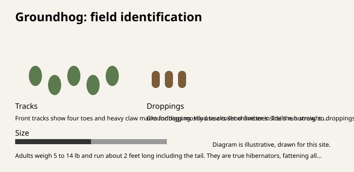
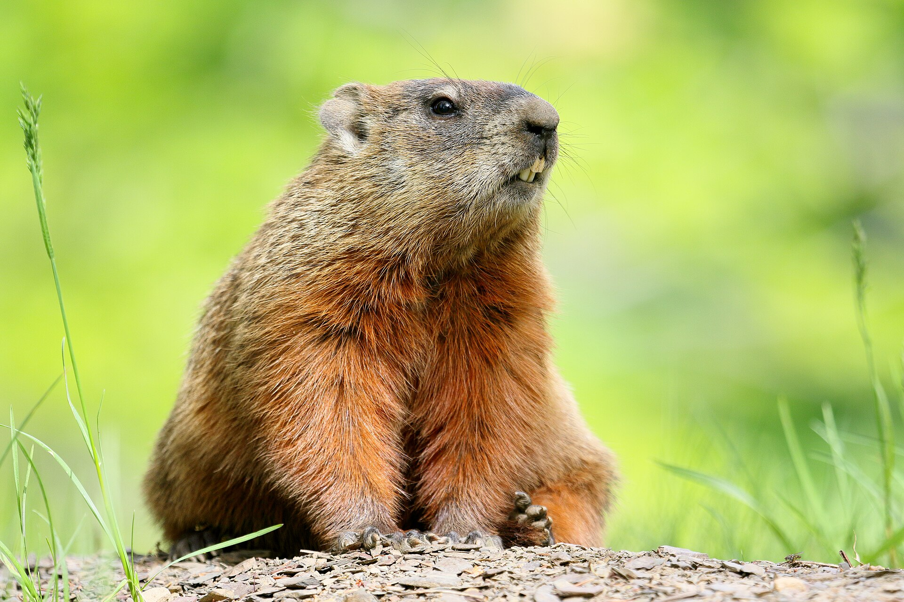
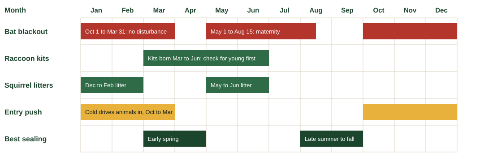
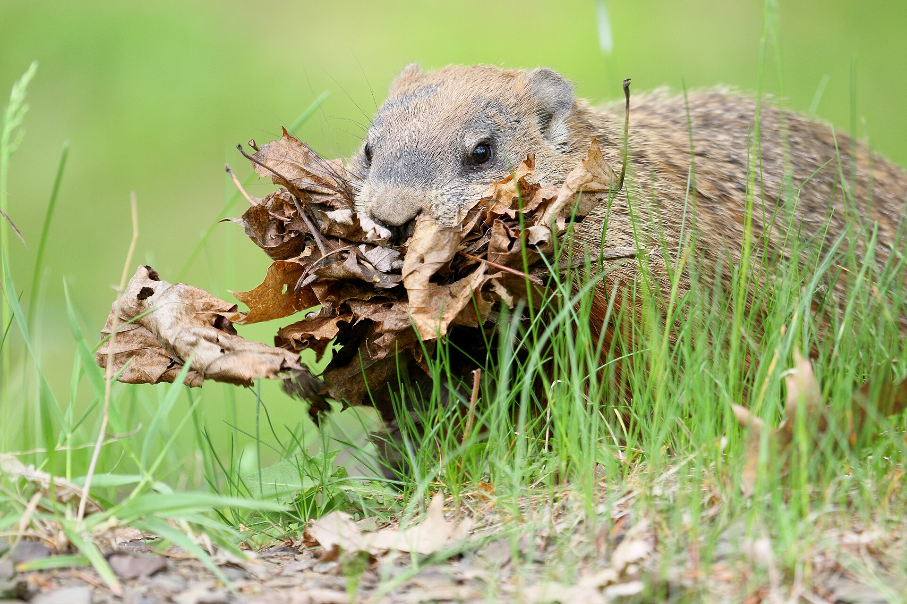

Animal guide - upstate New York
Groundhog Removal in Upstate NY
A groundhog, also called a woodchuck, is a digging engineer with a daily excavation habit. One animal under a shed means a burrow system with several entrances, a garden raided on schedule, and soil quietly removed from under footings and slabs. Groundhogs are a summer problem with a winter deadline, because they hibernate and the barrier work is best done while they are active. This page covers identification, burrow behaviour, New York rules, humane eviction, and costs.
What are the signs of a groundhog problem?
- A burrow entrance 10 to 12 inches wide with a fan of excavated soil, usually under a shed, deck or fence line
- Several connected holes: a main entry, a plunge hole and a spy hole are typical
- Garden damage: beans, peas, broccoli and melon tops clipped clean at an angle
- A whistle and a brown shape bolting for the hole when you enter the yard
- Undermined slabs, walkways or shed footings where soil has been carried out
- Tracks in soft soil: four toes in front, five behind, with strong claw marks


Front tracks show four toes and heavy claw marks for digging. Hind tracks show five toes. Trails run straight between burrow and garden. Groundhogs mostly use a toilet chamber inside the burrow, so droppings are rarely the sign. Burrow shape and garden damage identify them. Adults weigh 5 to 14 lb and run about 2 feet long including the tail. They are true hibernators, fattening all summer for winter.
What damage do groundhogs do inside a home?
Groundhog damage is structural in slow motion. A burrow system can run 30 to 45 feet with several chambers, and the excavated soil comes from somewhere: under shed footings, deck posts, concrete slabs, retaining walls and occasionally foundations. Slabs crack and settle, fences lean, and mower wheels find hidden plunge holes in the lawn. Add the garden losses and the burrowing under structures near the house, and one animal is a real liability. Filling the visible hole does nothing, because the system has other doors.
How do groundhogs behave through the New York year?
Groundhogs are daytime animals and strict vegetarians with excellent memories for a good garden. They emerge from hibernation in late winter to early spring, males first, mate soon after, and pups are born in April and May, leaving the burrow by midsummer. They whistle when alarmed, then bolt for the nearest hole, which is why burrows always sit near cover. By October they are fat and heading underground for a hibernation that lasts until late winter, sleeping through the coldest months on stored fat alone.
The groundhog year is short and predictable. Emergence runs late February to March, and fresh digging then marks the active systems. Pups arrive in April and May and are out foraging by July, which is when garden complaints peak. Late summer is the best barrier season, with animals active and hibernation still ahead. October onward, groundhogs are underground asleep, burrow work pauses, and a hole found in winter is usually an old system or another animal entirely. Plan structural barriers for August and September.


Are groundhogs a health risk to my family or pets?
Groundhogs are not a rabies vector species of concern in the way raccoons and skunks are, though any mammal can carry it and a tame or staggering animal deserves distance. The common issues are fleas and ticks around burrow mouths, and droppings are a non-issue since groundhogs use a buried toilet chamber. The real hazards are physical: hidden plunge holes that turn ankles and mower decks, and the undermining of slabs and steps. Pets that corner a groundhog can be badly bitten, since a cornered woodchuck fights hard.
What does New York law say about groundhog removal?
Groundhogs are unprotected wildlife in New York in the regulatory sense, classed as a nuisance species that landowners and licensed operators may take when they are damaging property, but local rules and humane standards still shape the work, and DEC-licensed operators handle problem animals around homes under their licence. Relocation sounds kind and performs badly: moved groundhogs face resident animals, no burrow and high mortality heading into winter. Eviction plus barriers, with the animal continuing in nearby habitat, is the outcome this site stands behind.
Can I handle groundhog removal myself?
Garden defences are fair DIY: a fence at least 3 feet high with the bottom buried or bent outward, and the top loose so it cannot be climbed, genuinely works. Burrow work is where DIY fails. Collapsing or filling holes while the animal is out feeding just moves the digging, flooding a burrow is cruel and ineffective against a system with high chambers, and smoke bombs are dangerous near structures and illegal in some uses. The durable fix pairs eviction with a buried L-footer barrier on the structure, so the next groundhog cannot dig back in.
One last thing on choosing help. Get the inspection findings in writing, with photographs of each entry point, and get removal, sealing and cleanup as separate lines on the estimate. Ask what material closes each hole, because foam and caulk alone are not exclusion. And ask the season question out loud: if the timing is wrong for this species, an honest operator will tell you to wait, and offer the inspection and quote now so the work is ready the week the window opens.
How does humane groundhog removal work, step by step?

Map the burrow system
The inspection finds every entrance, main, plunge and spy holes, and works out which structure the system undermines. A burrow is a network, not a hole, and eviction or barrier work planned on one entrance fails against the other three.
Evict or live-capture the animal
Active systems are cleared with one-way doors at the main entry or live capture under licence, timed outside the weeks when pups are underground and dependent. The goal is an empty system, confirmed before any barrier or fill work starts.
Install a buried L-footer barrier
Galvanised mesh is dug down and bent outward in an L along the shed, deck or foundation line, so a digging animal meets mesh wherever it tries. This barrier, not the eviction, is what makes the fix permanent.
Backfill, compact and monitor
The empty burrow is collapsed and backfilled in compacted layers so it does not settle into a sinkhole later, and the site is checked through the season for new digging at the barrier edges.
In the local data
This is not a theoretical animal for these towns. Observers have logged 1,708 research-grade iNaturalist observations of the groundhog (Marmota monax) across the ten town areas this site covers, and the species was recorded in all 10 of the 10 areas.
Data: iNaturalist, 25 km radius per town, fetched November 2026.
How much does groundhog removal cost?
| Service | Typical range | Notes |
|---|---|---|
| Inspection and entry-point survey | $150-$300 | Often credited toward the work when you proceed. |
| Single-animal humane removal | $300-$600 | One animal, one entry point, straightforward access. |
| Bat exclusion, full home | $800-$2,500 | Colony work: one-way valves, full seal, guano check. |
| Attic cleanup and disinfection | Quoted after inspection | Depends on droppings volume and insulation condition. |
Groundhog pricing centres on the barrier, not just the animal. A single eviction is a standard single-animal job, while L-footer mesh is quoted by the linear foot after the burrow map shows which sides of the structure need protection.
These are typical market ranges for upstate New York, published so you can sanity-check any quote. They are not a quote for your home: access, entry count, young in the den and cleanup volume move the real number, which is why the inspection comes first and the estimate is written.
Groundhog removal in your town
The method on this page is state-wide, but the animal pressure, housing stock and season are local. These town pages combine the groundhog method with each town's housing, waterways and cost notes, including sub-services like attic, chimney and under-deck work, babies, damage repair and emergencies.
Ithaca Binghamton Poughkeepsie Kingston Newburgh Utica Saratoga Springs Watertown Auburn Elmira
Groundhog removal questions, answered
How do I keep groundhogs out of my garden?
Fence it the way groundhogs actually test it. Use mesh at least 3 feet above ground, bury the bottom 12 inches or bend it outward in an apron, and leave the top foot unsecured and floppy so a climbing groundhog tips backward. Electric strands help on large plots. Repellent sprays wash off and need constant reapplication, so treat them as a supplement, never the plan. Remove brush piles and cover near the fence line too.
A groundhog is living under my shed. What should I do?
Do not start by filling the hole, because the system has other entrances and the animal will dig out somewhere worse, sometimes under the footing itself. Get the burrow mapped and the animal evicted first, then have a buried L-footer barrier fitted along the shed line and the empty burrow backfilled and compacted. That sequence, eviction, barrier, backfill, is the difference between a permanent fix and an annual subscription to the same problem.
Are groundhogs dangerous to people or pets?
Groundhogs avoid people and bolt for the burrow at the first alarm whistle, so unprovoked attacks are not a realistic concern. A cornered groundhog is different: dogs that dig at burrow mouths can take serious bites, and groundhogs defend themselves well. They are not a rabies vector species of note, but any mammal acting strangely deserves distance. The practical dangers are the hidden holes and the undermined slabs, not the animal itself.
Is a groundhog the same as a woodchuck?
Yes, exactly the same animal, Marmota monax. Woodchuck comes from an Algonquian name for the animal, not from any habit of chucking wood, and groundhog is the other common name across New York. They are the largest member of the squirrel family in the region, true hibernators, and strict plant eaters. Whatever the name on the quote, the burrow system, the eviction method and the barrier work are identical.
When do groundhogs hibernate, and can work be done in winter?
Groundhogs enter hibernation from around October and stay underground until late winter, living on body fat and dropping their body temperature close to the air in the burrow. Barrier planning and quotes can happen any time, but eviction cannot: there is no active animal to evict in January, and sealing a hibernating animal in is not acceptable. Schedule eviction and L-footer work between spring emergence and early fall for a clean result.
Why does the groundhog keep coming back after I fill the hole?
Because filling one entrance of a multi-door burrow is a minor inconvenience to an animal that digs for a living. It reopens the hole or uses a plunge entrance you never saw, often within days. It also returns because nothing about the site changed: the shed still offers a dry, safe den floor. Eviction plus a buried mesh barrier changes the site itself, and that is when the returns stop.
Do you use poison for groundhogs in the attic or around the home?
No. Poison is not part of humane groundhog work on this site, and for good reason. A poisoned animal usually dies somewhere unreachable, in a wall, a flue or under a floor, and the entry point stays open for the next animal anyway. Eviction, one-way doors where they fit, live capture where they do not, and then sealing solves the problem at the structure, which is where it actually lives.
Will you seal the entry points, or just remove the animal?
Sealing is the point of the job, and any quote that only covers removal is half a quote. The process here runs in order: inspect and map every entry, evict or capture the groundhogs, confirm the space is empty, then close each opening with materials the animal cannot chew, dig or pry through. Removal without exclusion is a short rental of an empty attic, and the next tenant rarely waits a full season to move in.
Are wildlife removal operators licensed and insured in New York?
They should be, and you can check before anyone climbs your roof. Nuisance Wildlife Control Operators in New York work under a NYS DEC licence, carry insurance for roof and attic work, and should give you the licence details on request. The checklist is simple: licence, insurance, a written estimate with line items, and a method that starts with inspection and ends with sealing. An operator who cannot produce the first two has not earned the job.
How fast can a wildlife technician get to my home?
Response time depends on where in upstate New York you are and what the groundhog is doing. An animal in the living space, a chimney or a wall void is treated as urgent and usually gets a same-day or next-day response across the towns this site covers. Attic evictions and barrier work are booked as inspections first, normally within a few days, and the written quote follows the inspection, not a guess over the phone.
How much does groundhog removal cost in upstate New York?
The canonical bands on this site apply to every town: inspections run $150 to $300 and are often credited toward the work, a single-animal humane removal is typically $300 to $600, full bat exclusion runs $800 to $2,500, and attic cleanup is quoted after inspection because it depends on what the animals left behind. Groundhog pricing centres on the barrier, not just the animal. A single eviction is a standard single-animal job, while L-footer mesh is quoted by the linear foot after the burrow map shows which sides of the structure need protection.